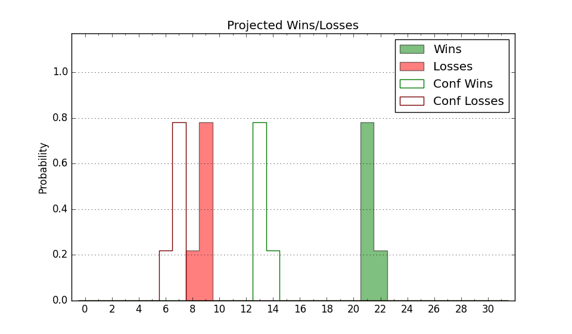

| Home | Game Probabilities | Conferences | Preseason Predictions | Odds Charts | NCAA Tournament |
| City: | Albuquerque, New Mexico | |
| Conference: | Mountain West (2nd)
| |
| Record: | 13-6 (Conf) 21-8 (Overall) | |
| Ratings: | Comp.: 17.3 (48th) Net: 17.3 (48th) Off: 116.6 (75th) Def: 99.3 (37th) SoR: 21.0 (53rd) |
| Remaining | ||||||
|---|---|---|---|---|---|---|
| Date | Opponent | Win Prob | Pred. | |||
| 3/7 | @ Utah St. (29) | 21.7% | L 74-83 | |||
| Previous | Game Score | |||||
| Date | Opponent | Win Prob | Result | Off | Def | Net |
| 11/5 | Texas A&M Commerce (298) | 97.4% | W 76-54 | -23.3 | 15.1 | -8.2 |
| 11/8 | UT Arlington (155) | 90.4% | W 74-56 | -12.3 | 12.6 | 0.3 |
| 11/11 | UC Riverside (265) | 96.2% | W 82-68 | 1.3 | -14.2 | -12.8 |
| 11/15 | @New Mexico St. (187) | 77.9% | L 68-76 | -10.6 | -14.7 | -25.3 |
| 11/20 | (N) Nebraska (14) | 23.1% | L 72-84 | -8.3 | 7.0 | -1.4 |
| 11/21 | (N) Mississippi St. (106) | 73.4% | W 80-78 | 1.1 | -2.9 | -1.8 |
| 11/26 | Alabama St. (310) | 97.8% | W 93-87 | 4.2 | -34.3 | -30.0 |
| 12/6 | Santa Clara (44) | 60.7% | W 98-71 | 25.5 | 9.4 | 34.9 |
| 12/10 | @VCU (51) | 37.8% | W 81-78 | 9.9 | 0.6 | 10.5 |
| 12/14 | Florida Gulf Coast (261) | 96.2% | W 75-59 | -16.2 | 3.3 | -12.9 |
| 12/20 | San Jose St. (230) | 95.0% | W 88-65 | 3.0 | 0.4 | 3.4 |
| 12/30 | @Boise St. (54) | 38.2% | L 53-62 | -32.7 | 21.0 | -11.7 |
| 1/3 | Wyoming (96) | 81.5% | W 78-58 | 10.5 | 4.7 | 15.2 |
| 1/6 | @Colorado St. (78) | 47.2% | W 80-70 | 13.0 | 10.1 | 23.2 |
| 1/10 | @Air Force (341) | 96.0% | W 91-49 | 11.1 | 15.8 | 26.9 |
| 1/13 | Grand Canyon (74) | 74.5% | W 87-64 | 11.8 | 9.5 | 21.3 |
| 1/17 | @San Diego St. (46) | 33.5% | L 79-83 | 0.0 | -1.0 | -1.0 |
| 1/21 | Fresno St. (132) | 87.5% | W 83-74 | -8.7 | -0.9 | -9.6 |
| 1/24 | Nevada (75) | 74.7% | W 80-73 | -0.4 | -1.5 | -1.9 |
| 1/27 | @UNLV (111) | 61.6% | W 89-61 | 5.3 | 26.8 | 32.1 |
| 1/31 | @San Jose St. (230) | 84.7% | W 90-80 | 21.2 | -24.7 | -3.5 |
| 2/4 | Utah St. (29) | 48.5% | L 66-86 | -19.5 | -8.4 | -28.0 |
| 2/7 | Boise St. (54) | 67.8% | L 90-91 | 24.4 | -28.1 | -3.6 |
| 2/11 | @Grand Canyon (74) | 46.2% | W 70-64 | 2.3 | 10.9 | 13.3 |
| 2/17 | Air Force (341) | 98.8% | W 98-61 | 16.0 | -3.2 | 12.8 |
| 2/21 | @Fresno St. (132) | 67.2% | W 80-78 | 11.8 | -15.7 | -3.8 |
| 2/24 | @Nevada (75) | 46.4% | L 60-67 | -23.3 | 14.0 | -9.3 |
| 2/28 | San Diego St. (46) | 63.2% | W 81-76 | 10.5 | -7.4 | 3.1 |
| 3/4 | Colorado St. (78) | 75.3% | L 74-82 | -16.9 | -5.8 | -22.7 |
| Stats & Trends | |||||
|---|---|---|---|---|---|
| Current | Day | Week | Month | Season | |
| Composite | 17.3 | -0.9 | -1.0 | -1.5 | +8.0 |
| Comp Rank | 48 | -2 | -3 | -3 | +29 |
| Net Efficiency | 17.3 | -0.9 | -1.0 | -1.9 | -- |
| Net Rank | 48 | -2 | -3 | -5 | -- |
| Off Efficiency | 116.6 | -0.6 | -0.4 | +0.0 | -- |
| Off Rank | 75 | -4 | -4 | -2 | -- |
| Def Efficiency | 99.3 | -0.2 | -0.6 | -1.9 | -- |
| Def Rank | 37 | -2 | -2 | -7 | -- |
| SoS Rank | 92 | -- | +2 | +12 | -- |
| Exp. Wins | 21.2 | -0.8 | -0.4 | -1.4 | +2.5 |
| Exp. Conf Wins | 13.2 | -0.8 | -0.4 | -1.4 | +1.0 |
| Conf Champ Prob | 21.9 | -1.1 | +11.1 | -5.1 | +13.5 |

| Advanced Stats | ||
|---|---|---|
| Stat | Value | Rank |
| Off Eff FG % | 0.549 | 77 |
| Off Ast Ratio | 0.159 | 101 |
| Off ORB% | 0.314 | 148 |
| Off TO Rate | 0.129 | 70 |
| Off FT Ratio | 0.362 | 161 |
| Def Eff FG % | 0.480 | 57 |
| Def Ast Ratio | 0.132 | 61 |
| Def ORB% | 0.259 | 34 |
| Def TO Rate | 0.174 | 35 |
| Def FT Ratio | 0.322 | 116 |